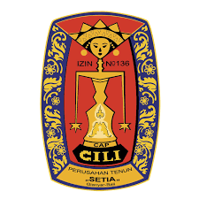
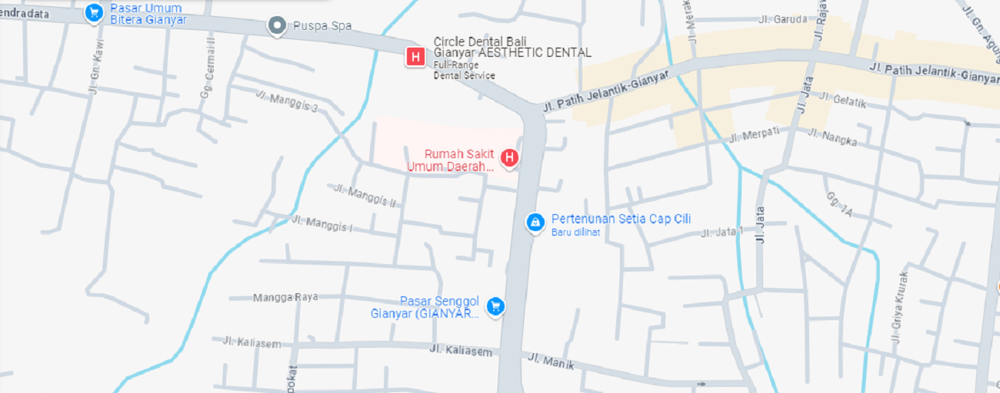

Setia Cap Cili
Home
About Us
Products
Handwoven
Kamen
Handwoven Souvenirs
Contact
+6282147016100
+6282147016100
Join Us
WE want to hear from you.
Reach out to us with your preferred channel.
We will get back to you soon
